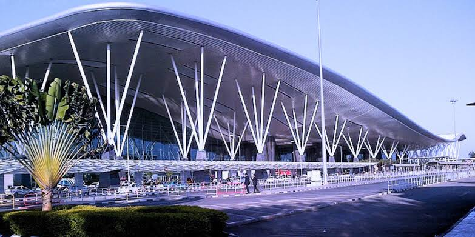
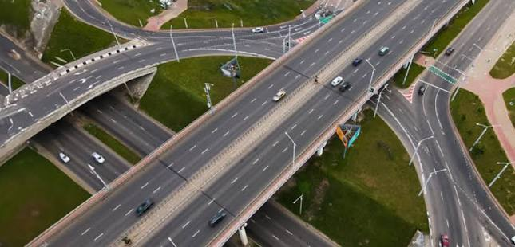
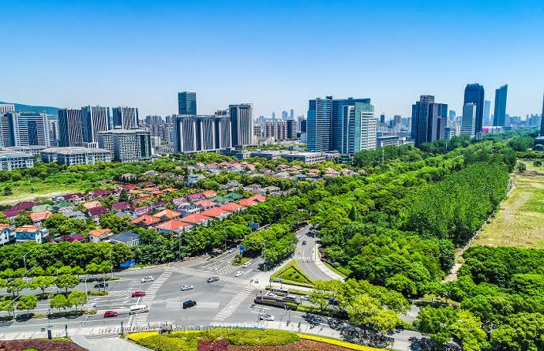

The Nikoo Homes 9 Location is one of the project's most important advantages. Situated in KIADB, Bagalur, Bangalore, the development is positioned within a rapidly evolving part of North Bangalore that continues to benefit from improving infrastructure, expanding employment corridors, and better road connectivity.
Bagalur has steadily emerged as a preferred residential destination due to its strategic location and planned urban growth. The area offers convenient access to major business hubs, educational institutions, healthcare facilities, and everyday services while maintaining a well-planned residential environment.
The project enjoys good connectivity to important roads and transport networks, making daily travel more convenient for working professionals and families. Its location also supports easy access to key commercial and industrial zones across North Bangalore.
Key Location Highlights
- Located in KIADB, Bagalur, North Bangalore.
- Good connectivity to major employment and business corridors.
- Convenient access to Kempegowda International Airport.
- Well connected through important arterial roads and highway networks.
- Close to schools, colleges, hospitals, and shopping destinations.
- Situated in a developing residential corridor with ongoing infrastructure improvements.
- Suitable for both end-use homebuyers and long-term property investment.
Connectivity Snapshot
| Key Infrastructure |
Approximate Distance |
Estimated Travel Time |
| Kempegowda International Airport |
Approx. 15–18 km |
25–30 Minutes |
| Hebbal |
Approx. 22 km |
35–45 Minutes |
| Yelahanka |
Approx. 15 km |
25–30 Minutes |
| Manyata Tech Park |
Approx. 24 km |
40–45 Minutes |
| Devanahalli |
Approx. 18 km |
25–30 Minutes |
| Bellary Road (NH 44) |
Approx. 10 km |
15–20 Minutes |
Travel time may vary depending on traffic conditions and the route selected.
The location offers practical connectivity to major destinations across North Bangalore while remaining within a growing residential neighbourhood. Continuous infrastructure improvements are expected to enhance accessibility in the coming years.
Airport Connectivity

Kempegowda International Airport
One of the major advantages of the Nikoo Homes 9 location is its convenient access to Kempegowda International Airport. The airport can be reached through well-established road networks connecting Bagalur with the northern part of the city.
- Approximate Distance: 15–18 km
- Estimated Travel Time: 25–30 minutes
This connectivity is particularly beneficial for professionals who travel frequently or work in airport-related business and logistics sectors.
Road Connectivity

Well-Connected Road Network
Bagalur enjoys connectivity through major roads that link the locality with different parts of Bangalore. These road networks support convenient travel to employment centres, residential neighbourhoods, and commercial destinations.
The area's improving infrastructure has contributed to smoother movement between North Bangalore and other important city locations. Ongoing road development projects are expected to further improve regional accessibility.
Public Transport
Bus & Local Transport
The locality is served by BMTC buses, private transport services, taxis, and app-based cab services, providing multiple commuting options for residents.
Connectivity Benefits
- Regular public transport services to different parts of Bangalore.
- Easy availability of taxis and app-based ride services.
- Good road connectivity for private vehicle users.
- Convenient access to nearby residential and commercial areas.
Social Infrastructure
Education, Healthcare & Daily Convenience
The Bhartiya City Nikoo Homes 9 location benefits from access to established social infrastructure across North Bangalore. Residents are expected to find schools, colleges, healthcare facilities, supermarkets, and everyday retail services within a reasonable travelling distance.
The availability of these essential services adds to the practicality of the location for families seeking a well-connected residential environment.
Distance from Major Places
| Destination |
Approximate Distance |
Estimated Travel Time |
| Kempegowda International Airport |
15–18 km |
25–30 Minutes |
| Devanahalli |
18 km |
25–30 Minutes |
| Yelahanka |
15 km |
25–30 Minutes |
| Hebbal |
22 km |
35–45 Minutes |
| Manyata Tech Park |
24 km |
40–45 Minutes |
| Bellary Road (NH 44) |
10 km |
15–20 Minutes |
| Nearby Schools & Colleges |
Within 5–10 km |
10–20 Minutes |
| Healthcare Facilities |
Within 5–10 km |
10–20 Minutes |
Distances and travel times are approximate and may vary depending on the chosen route and traffic conditions.
Why the Location Stands Out
The Nikoo Homes 9 Location combines the advantages of a developing residential neighbourhood with improving urban infrastructure and convenient city connectivity. Its position in KIADB, Bagalur provides access to major employment hubs, airport connectivity, educational institutions, healthcare services, and everyday conveniences.
As North Bangalore continues to grow through infrastructure expansion and planned development, the Bagalur corridor is expected to remain an important residential destination for homebuyers looking for a well-connected and organised urban environment.
Upcoming Infrastructure Around Bhartiya City Nikoo Homes 9
Infrastructure Development in Bagalur & North Bangalore
The Nikoo Homes 9 location in KIADB, Bagalur is part of one of North Bangalore's rapidly developing corridors. The region continues to benefit from planned infrastructure upgrades that are improving connectivity, supporting residential growth, and strengthening the overall urban ecosystem.
Several public infrastructure projects are expected to enhance accessibility across North Bangalore over the coming years. These developments are contributing to the area's growing appeal for homebuyers seeking a well-connected residential location.
Metro Expansion Plans
Future metro expansion proposals across North Bangalore are expected to improve public transport connectivity between Bagalur and other important parts of Bangalore. Once operational, these projects may reduce travel time and provide additional commuting options for residents.
Road & Connectivity Improvements
Road widening projects, junction upgrades, and improvements to major arterial roads are expected to strengthen connectivity throughout the Bagalur region. These infrastructure developments are intended to support increasing residential and commercial activity while improving everyday travel.
Overall, the KIADB Bagalur corridor continues to evolve into an organised residential destination with improving infrastructure and better city-wide connectivity.
Bagalur Compared with Established North Bangalore Locations
| Feature |
Hebbal |
KIADB, Bagalur |
| Development Stage |
Well-established urban centre |
Emerging residential growth corridor |
| Traffic Conditions |
High during peak hours |
Comparatively moderate |
| Residential Character |
Mixed commercial and residential |
Primarily residential with planned development |
| Open Spaces |
Limited in many areas |
Better availability of planned open spaces |
| Suitable For |
Immediate commercial access |
Long-term residential living and future growth |
Why Consider Bagalur for Residential Living?
1. Emerging North Bangalore Growth Corridor
Bagalur forms part of North Bangalore's expanding residential belt, supported by improving infrastructure, employment growth, and increasing real estate development. The locality continues to attract new residential communities because of its long-term development potential.
2. Improving Infrastructure
Ongoing road upgrades, better regional connectivity, and planned transport improvements continue to strengthen the area's accessibility. These developments are expected to support convenient travel while encouraging balanced urban growth.
3. Growing Social Infrastructure
The locality has access to schools, colleges, healthcare facilities, supermarkets, and essential daily services within the surrounding region. This growing social infrastructure supports comfortable everyday living for families.
4. Well-Planned Residential Environment
Compared with many densely developed city locations, Bagalur offers a relatively organised residential setting with expanding neighbourhoods, wider roads, and more open surroundings.
5. Increasing Demand for Quality Housing
North Bangalore has witnessed steady demand for well-planned residential developments due to the expansion of employment centres and supporting infrastructure. This trend continues to contribute to the area's residential growth.
6. Long-Term Development Potential
With continuous infrastructure investment and planned urban expansion, Bagalur remains one of the promising residential locations for buyers seeking long-term value and future connectivity.
Educational Institutions Near Bhartiya City Nikoo Homes 9
Bagalur offers access to several well-known educational institutions across North Bangalore. Families living in the area benefit from the availability of schools offering CBSE, ICSE, State Board, and international curricula within a reasonable driving distance.
| School |
Approx. Distance |
Board / Curriculum |
Highlights |
| Delhi Public School, North Bangalore |
8–10 km |
CBSE |
Well-known for academics and sports facilities |
| Canadian International School |
10–12 km |
IB / IGCSE |
International curriculum and modern campus |
| Stonehill International School |
12–15 km |
IB |
Globally recognised academic programme |
| REVA Independent PU College |
10–12 km |
Pre-University |
Popular higher education institution |
| VIBGYOR High School |
10–12 km |
CBSE / ICSE |
Balanced academic and extracurricular learning |
The availability of quality educational institutions is one of the reasons North Bangalore continues to attract family-oriented residential development.
Hospitals Near Bhartiya City Nikoo Homes 9
North Bangalore has developed a strong healthcare network with multispeciality hospitals, emergency care centres, and diagnostic facilities located across nearby neighbourhoods.
| Hospital |
Approx. Distance |
Speciality |
Highlights |
| Aster CMI Hospital |
20–22 km |
Multispeciality |
Advanced healthcare and emergency services |
| Manipal Hospital, Yelahanka |
16–18 km |
General & Speciality Care |
Comprehensive medical services |
| Ramaiah Leena Hospital |
15–18 km |
Multispeciality |
Modern treatment facilities |
| Akash Hospital, Devanahalli |
18–20 km |
General Healthcare |
Regional healthcare services |
| NRV Hospital |
18–20 km |
Multispeciality |
Family healthcare and emergency care |
The availability of established healthcare infrastructure supports the long-term residential appeal of the Bagalur region.
Business & Employment Hubs Near Bhartiya City Nikoo Homes 9
One of the important advantages of the project's location is its connectivity to major employment corridors across North Bangalore. Residents can conveniently access technology parks, business districts, and industrial zones through the region's expanding road network.
| Business Hub |
Approx. Distance |
Primary Sector |
Importance |
| Manyata Tech Park |
24–26 km |
IT & Technology |
One of Bangalore's major employment hubs |
| KIADB Aerospace Park |
8–10 km |
Aerospace & Manufacturing |
Expanding industrial and business zone |
| Devanahalli Business Corridor |
18–20 km |
Commercial Development |
Emerging employment destination |
| Kirloskar Business Park |
22–24 km |
Corporate Offices |
Established commercial centre |
| Hardware Tech Park |
10–12 km |
Electronics & Technology |
Growing industrial cluster |
The proximity to employment centres continues to support residential demand across the Bagalur corridor.
Lifestyle & Entertainment Destinations
Residents of Bhartiya City Nikoo Homes 9 are expected to have convenient access to shopping, dining, and entertainment destinations located across North Bangalore.
| Destination |
Approx. Distance |
Category |
Highlights |
| Phoenix Mall of Asia |
22–24 km |
Shopping Mall |
Retail outlets, restaurants, and entertainment |
| RMZ Galleria Mall |
18–20 km |
Lifestyle Mall |
Shopping, dining, and multiplex |
| Esteem Mall |
22–24 km |
Retail Centre |
Shopping and family entertainment |
| Devanahalli Town Centre |
18–20 km |
Local Commercial Area |
Daily shopping and essential services |
| Upcoming Retail Developments |
Nearby |
Mixed Use |
Future commercial and convenience facilities |
The growing retail and entertainment infrastructure across North Bangalore complements the area's residential development and enhances everyday convenience.
A Well-Connected Residential Destination
The Bhartiya City Nikoo Homes 9 location combines improving infrastructure, expanding social amenities, and access to major employment corridors within North Bangalore. Educational institutions, healthcare facilities, commercial centres, and lifestyle destinations are all accessible through the region's growing transport network.
As Bagalur continues to develop with planned infrastructure investments and residential growth, the locality is steadily strengthening its position as a practical destination for modern urban living while offering long-term development potential.
Bagalur – A Growing Residential Destination in North Bangalore
Bagalur has emerged as one of the fast-developing residential locations in North Bangalore. Over the past few years, the locality has attracted increasing attention from homebuyers because of its planned infrastructure, expanding employment opportunities, and improving road connectivity. With the continued growth of North Bangalore, Bagalur has become an important destination for modern residential developments.
The location of Bhartiya City Nikoo Homes 9 in KIADB, Bagalur benefits from this ongoing transformation. The area offers convenient access to important business corridors, educational institutions, healthcare facilities, and transportation networks while maintaining a relatively organised residential environment.
As of 2026, Bagalur continues to evolve with new infrastructure projects and residential communities. Its strategic position between established neighbourhoods and emerging commercial zones makes it a practical choice for families and professionals looking for long-term residential value.
Growth of Bagalur, Bangalore
Bagalur has gradually transformed from a suburban locality into one of North Bangalore's promising residential growth corridors. The area's development has been supported by expanding road infrastructure, planned industrial zones, and increasing investment in residential projects.
The growth of Kempegowda International Airport and the surrounding economic corridor has played an important role in strengthening the region's development. Better connectivity, improved civic infrastructure, and expanding commercial activity have encouraged residential demand across Bagalur and nearby localities.
In recent years, the area has witnessed the development of new apartment communities, improved public infrastructure, and better access to essential services. These factors continue to contribute to the long-term growth of the locality.
Proximity Highlights
| Destination |
Approximate Distance |
| Kempegowda International Airport |
15–18 km |
| Devanahalli |
18 km |
| Yelahanka |
15 km |
| Hebbal |
22 km |
| Manyata Tech Park |
24 km |
| Bellary Road (NH 44) |
10 km |
Distances are approximate and may vary depending on the route taken.
Why Bagalur Supports Modern Residential Living
Bagalur offers a combination of improving infrastructure and planned urban development that supports comfortable residential living. Compared with many densely developed city areas, the locality provides more organised neighbourhoods with better opportunities for future expansion.
The area also benefits from access to educational institutions, hospitals, shopping centres, and essential services located across North Bangalore. This balanced availability of social infrastructure makes the locality suitable for families seeking everyday convenience.
History of Bagalur

Bagalur has long been known as one of the traditional settlements in North Bangalore. For many years, the locality remained a quiet suburban area surrounded by agricultural land and small residential neighbourhoods.
As Bangalore expanded towards the northern region, Bagalur gradually experienced significant urban development. Improved road networks, industrial growth, and infrastructure investment encouraged the development of residential communities and supporting commercial facilities.
Today, Bagalur continues to develop as part of North Bangalore's broader growth corridor, with increasing emphasis on planned residential neighbourhoods and modern urban infrastructure.
Strategic Location Advantages
The location of Nikoo Homes 9 offers practical connectivity to several important destinations across North Bangalore.
Key Connectivity Benefits
- Located in the developing KIADB, Bagalur corridor.
- Convenient access to Kempegowda International Airport.
- Good connectivity to Bellary Road (NH 44) and major road networks.
- Easy access to North Bangalore's employment corridors.
- Improving road infrastructure supporting smoother daily travel.
- Close to schools, healthcare facilities, and daily convenience services.
Business & Employment Hubs Near Bagalur
North Bangalore has become an important employment destination with the growth of technology parks, industrial developments, and commercial centres. Bagalur benefits from its proximity to several established and emerging employment zones.
|
Business Hub
|
Approximate Distance
|
| KIADB Aerospace Park |
8–10 km |
| Hardware Tech Park |
10–12 km |
| Manyata Tech Park |
24–26 km |
| Kirloskar Business Park |
22–24 km |
| Devanahalli Business Corridor |
18–20 km |
The presence of these employment centres continues to support residential demand across the Bagalur region, particularly among professionals working in North Bangalore.
Why Homebuyers Choose Bagalur
Organised Residential Environment
Bagalur is steadily developing as a planned residential locality with wider roads, expanding infrastructure, and well-designed communities that support comfortable urban living.
Access to Social Infrastructure
Residents benefit from nearby schools, colleges, hospitals, supermarkets, and other essential services that contribute to everyday convenience.
Access to Social Infrastructure
Residents benefit from nearby schools, colleges, hospitals, supermarkets, and other essential services that contribute to everyday convenience.
Airport Connectivity
The locality offers relatively convenient access to Kempegowda International Airport, making it suitable for frequent travellers and professionals working in airport-related industries.
Scope for Planned Development
The availability of larger land parcels has supported the development of organised residential communities with landscaped open spaces and better infrastructure planning.
Long-Term Growth Potential
Ongoing infrastructure improvements, employment expansion, and continued residential development are expected to strengthen Bagalur's position as one of North Bangalore's growing residential destinations in the coming years.
Bhartiya City Nikoo Homes 9 in a Growing Location
The location of Nikoo Homes 9 benefits from Bagalur's steady transformation into a well-connected residential corridor. The combination of improving infrastructure, access to employment centres, expanding social amenities, and future urban development contributes to the locality's growing residential appeal.
For homebuyers looking for a modern apartment community in North Bangalore, Bagalur offers a practical balance between connectivity, planned development, and long-term growth while continuing to evolve as one of the city's emerging residential destinations.
Premium Residential Projects in North Bangalore
North Bangalore has become one of the most active residential regions in the city, attracting homebuyers who prefer well-planned communities, modern infrastructure, and convenient connectivity. The area continues to witness the launch of premium apartment developments as residential demand grows alongside commercial and infrastructure expansion.
Nikoo Homes 9 is part of this evolving residential landscape. Located in KIADB, Bagalur, the project offers 2, 3, and 4 BHK luxury apartments within a thoughtfully planned 17-acre community. With approximately 80% open space, the development focuses on creating a balanced living environment where landscaped areas, residential buildings, and community facilities are integrated through organised planning.
As North Bangalore continues to expand, residential communities in emerging locations such as Bagalur are benefiting from better infrastructure, improved accessibility, and increasing social development. These factors continue to strengthen the area's long-term residential appeal.
North Bangalore – A Growing Urban Corridor

North Bangalore has developed into one of Bangalore's fastest-growing urban regions. Over the last decade, the area has experienced continuous growth in residential housing, commercial development, transportation infrastructure, and employment opportunities.
The region includes several important localities such as Bagalur, Devanahalli, Hebbal, Yelahanka, Jakkur, Thanisandra, and the airport corridor. Together, these areas form an expanding network of residential neighbourhoods supported by improving road connectivity and growing social infrastructure.
The location of Bhartiya City Nikoo Homes 9 allows residents to benefit from this ongoing regional development while living within a planned residential environment in KIADB, Bagalur.
Why North Bangalore Continues to Grow
The growth of North Bangalore has been driven by a combination of infrastructure investment, expanding employment corridors, and planned urban development. Improved transportation networks and commercial activity have encouraged the development of new residential communities across the region.
Several important developments continue to support this growth, including:
- Expansion of Kempegowda International Airport and the surrounding economic corridor.
- Road improvement and widening projects across North Bangalore.
- Proposed metro network expansion.
- Development of business parks and industrial corridors.
- Growth of technology, aerospace, and commercial hubs.
- Continued investment in residential and civic infrastructure.
These developments have contributed to the steady expansion of North Bangalore as a preferred residential destination.
Connectivity Advantages of North Bangalore
North Bangalore offers convenient access to many important parts of the city through its expanding road network and transport infrastructure.
Key Connectivity Highlights
- Convenient access to Kempegowda International Airport.
- Connectivity to Bellary Road (NH 44) and other major arterial roads.
- Access to Hebbal and North Bangalore employment corridors.
- Road links to Devanahalli, Yelahanka, and surrounding residential areas.
- Future public transport and metro expansion expected to improve regional connectivity.
The location of Nikoo Homes 9 benefits from these connectivity advantages while remaining within a developing residential corridor.
Why North Bangalore Supports Premium Residential Living
North Bangalore offers favourable conditions for organised residential development due to the availability of larger land parcels, improving infrastructure, and planned urban expansion.
Compared with several older parts of Bangalore, many areas within North Bangalore provide wider roads, growing civic infrastructure, and better opportunities for integrated residential communities. These characteristics have encouraged the development of premium apartment projects with landscaped open spaces and community-focused planning.
The region also continues to attract professionals working in nearby technology parks, industrial clusters, aerospace facilities, and commercial business districts.
History of North Bangalore's Development
North Bangalore was traditionally known for its agricultural land, lakes, defence establishments, and smaller residential settlements. Over time, urban expansion gradually extended into the northern region, bringing significant changes to the area's infrastructure and land use.
The establishment of Kempegowda International Airport marked a major turning point in the region's development. Improved transportation, commercial investment, and industrial growth encouraged new residential projects and supporting social infrastructure.
Today, North Bangalore represents one of the city's most important urban growth regions, combining residential neighbourhoods, business districts, industrial developments, and modern civic infrastructure.
Strategic Location Advantages
The KIADB Bagalur corridor offers practical connectivity to several important destinations across North Bangalore, making it suitable for modern residential development.
Important Connectivity Corridors
- Bellary Road (NH 44) connectivity.
- Access to Kempegowda International Airport.
- Road connectivity towards Hebbal and Yelahanka.
- Connectivity to Devanahalli and surrounding growth corridors.
- Improving regional road infrastructure supporting daily travel.
These transport networks contribute to the long-term accessibility of the Bagalur region.
Major IT & Employment Hubs in North Bangalore
North Bangalore has become an important employment destination with the growth of technology parks, industrial developments, and commercial business centres.
|
Employment Hub
|
Primary Sector
|
Regional Importance
|
| Manyata Tech Park |
Information Technology |
Major IT and corporate employment centre |
| KIADB Aerospace Park |
Aerospace & Manufacturing |
Industrial and engineering hub |
| Hardware Tech Park |
Electronics & Technology |
Expanding technology cluster |
| Kirloskar Business Park |
Corporate Offices |
Commercial business destination |
| Devanahalli Business Corridor |
Mixed Commercial Development |
Emerging employment and business zone |
The continued expansion of these employment centres supports residential demand across North Bangalore and contributes to the area's long-term growth.
Bhartiya City Nikoo Homes 9 in North Bangalore
Located in KIADB, Bagalur, Bhartiya City Nikoo Homes 9 is positioned within one of North Bangalore's emerging residential corridors. The project benefits from improving infrastructure, organised community planning, and convenient access to employment centres and essential social amenities.
With thoughtfully planned 2, 3, and 4 BHK apartments, approximately 17 acres of development, and around 80% open space, the project reflects the type of integrated residential planning that is becoming increasingly common across North Bangalore's growing neighbourhoods.
As the region continues to evolve through infrastructure improvements and planned urban development, Bagalur is steadily strengthening its position as a well-connected residential destination for modern homebuyers.